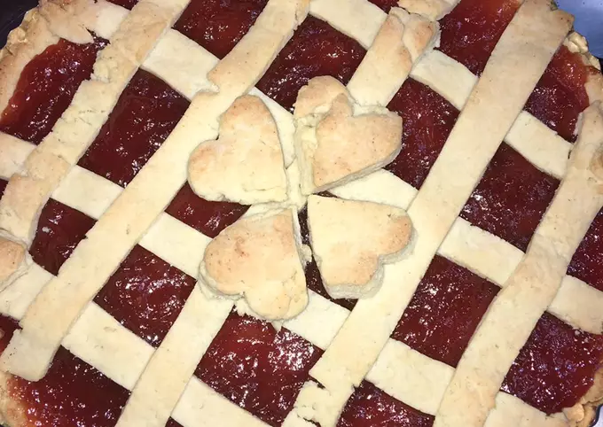

- Ingredientes:
- 25 raciones
- Masa
- 2 huevos
- 1/2 taza azúcar
- 1/4 taza aceite
- 1/4 taza leche
- 2 y 1/2 tazas harina 0000
- 1 cda polvo de hornear
- Chorro esencia de vainilla
- Ralladura de limón
- Relleno
- 700 grs dulce de membrillo
- Mezclar los huevos con el azúcar e ir agregando el resto de los ingredientes, la harina por último.
- Meter la masa en la heladera con papel film alrededor de 20 minutos.
- Mientras, en una hornalla con un chorro de agua meter los 700 gr. de membrillo previamente cortados en trocitos a calentar hasta que se forme una pasta, pisándolos con un pisapapa o algo similar.
- Enmantecar y enharinar una asadera y sacar la masa de la heladera, separando 1/4 para las tiras y lo demás estirarlo y colocarlo en la base de la misma. Luego, verter el membrillo por encima.
- Con cuidado, a la masa que se había separado estirarla y cortarla en largas tiras para formar el enrejado. A mí me sobró masa e improvisé hacer corazones con la misma para decorarla. Si se quiere se puede pincelar con un poco de huevo batido o leche y azúcar pero a mí me encantó como quedó sin nada.
- Precalentar el horno unos 5 minutos a 180 grados y cocinar durante 45 minutos aprox, dependiendo de la potencia de cada horno.
- Disfrutar y mandarme foto de cómo les quedó!! Si no son tan golosos esperen a que se enfríe y cómanla así que es mucho más rica!!